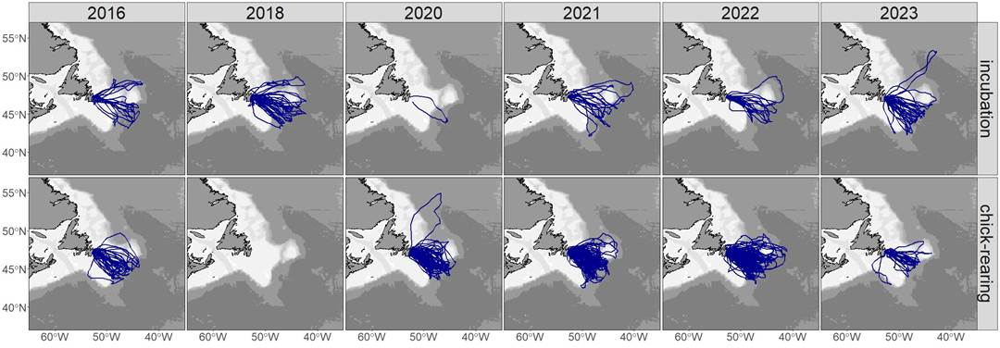
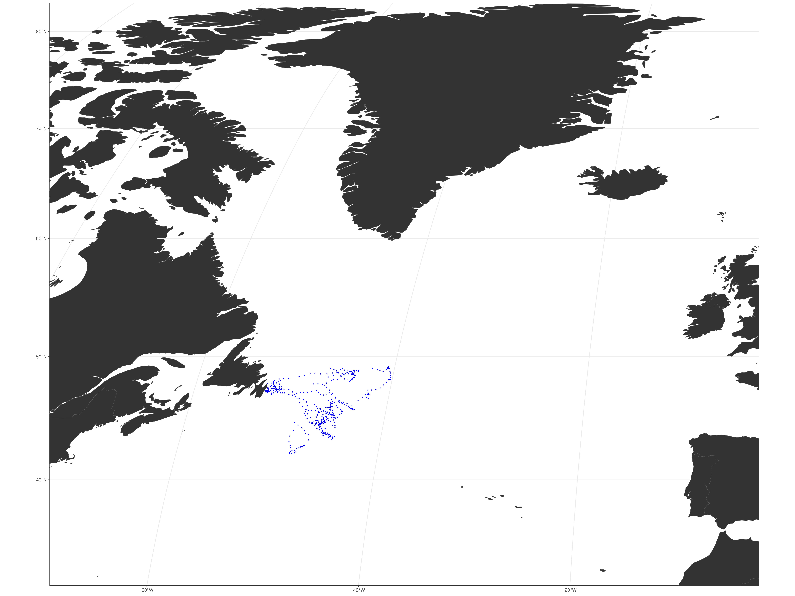
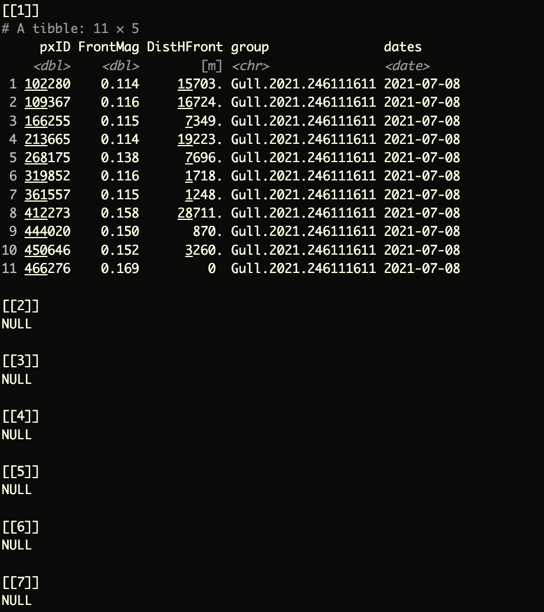

9 Megafauna and Ocean Fronts
9.1 Seabird dataset
In this chapter, we will explore whether marine megafauna intersect with the ocean front dataset we generated earlier. We will use the Gull Island dataset, which contains tracking data from 2016-2022, with positions recorded every two hours. Each bird in the dataset has a unique birdID, and multiple trips are recorded for each bird, each with its own unique ID.
The dataset includes a states3_hr column that categorizes behavior into three states:
transit: rapid movement to reach foraging areasextensive search: slower movement with tighter turns, likely searching for foodintensive searchvery slow movement with tight turns, indicating foraging in dense prey patches
There is a states2from3 column that combines the extensive and intensive search states into a single foraging category. This will help us determine how the movements of marine megafauna align with the ocean fronts we’ve identified.
For more information about the dataset, contact April.Hedd@ec.gc.ca and Katharine Studholme Katharine.Studholme@ec.gc.ca.
9.2 Data import
To make the most of our time during this workshop, we will focus on using data from 2021, specifically the records from July and August. You can source the necessary helper functions with the script z_helpFX.R and load the relevant files using z_inputFls_local.R.
# Source the helper functions and input files
source("zscripts/z_helpFX.R") # Load helper functions from the script
source("zscripts/z_inputFls_local.R") # Load input files specific to this workshopAlternatively, you can filter any date within the dataset by using the following code:
filtering the
seabird dataset
# Load necessary libraries
library(dplyr) # For data manipulation
library(readr) # For reading and writing data
# Step 1: Load the general seabird dataset and convert it to a tibble for easier manipulation
sbG <- readRDS("data_raw/seabird_test/data_HMMclassified_Gull_2016_22.rds") %>%
as_tibble()
# Step 2: Filter foraging behavior for July 2021
# This filters the dataset for entries in July 2021 where the seabird behavior is classified as 'Foraging'
sbF_07 <- sbG %>%
dplyr::filter(datetime_utc %in% sbG$datetime_utc[stringr::str_detect(string = sbG$datetime_utc, pattern = "2021-07.*")]) %>%
dplyr::filter(states2from3 == "Foraging")
# Similar to the above, but filtering for August 2021
sbF_08 <- sbG %>%
dplyr::filter(datetime_utc %in% sbG$datetime_utc[stringr::str_detect(string = sbG$datetime_utc, pattern = "2021-08.*")]) %>%
dplyr::filter(states2from3 == "Foraging")
# Step 3: Filter transit behavior for July 2021
# This filters the dataset for entries in July 2021 where the seabird behavior is classified as 'Transit'
sbT_07 <- sbG %>%
dplyr::filter(datetime_utc %in% sbG$datetime_utc[stringr::str_detect(string = sbG$datetime_utc, pattern = "2021-07.*")]) %>%
dplyr::filter(states2from3 == "Transit")
# Similar to the above, but filtering for August 2021
sbT_08 <- sbG %>%
dplyr::filter(datetime_utc %in% sbG$datetime_utc[stringr::str_detect(string = sbG$datetime_utc, pattern = "2021-08.*")]) %>%
dplyr::filter(states2from3 == "Transit")
Plot the data using
ggplot
# Source the helper functions and input files
source("zscripts/z_helpFX.R") # Load helper functions from the script
source("zscripts/z_inputFls_local.R") # Load input files specific to this workshop
# Convert the filtered seabird data (sbF_07) into a spatial object (sf) using the x and y coordinates
# The coordinate reference system (CRS) is set to LatLon (likely WGS 84)
mmF <- sbF_07 %>%
sf::st_as_sf(coords = c("x", "y"), crs = LatLon) %>%
st_transform(crs = robin) # Transform the spatial data to the Robinson projection (crs = robin)
# Create a ggplot object to visualize the seabird data (mmF) on a map
mmF_plot <- ggplot() +
geom_sf(data = mmF, colour = "blue", size = 0.3) + # Plot the seabird data as blue points
geom_sf(data = worldsf_rob, size = 0.05, fill = "grey20") + # Overlay a map of the world with dark grey landmasses
theme_bw() + # Apply a clean, white background theme.
coord_sf(xlim = c(st_bbox(worldsf_rob2)$xmin + 85000, st_bbox(worldsf_rob2)$xmax - 85000),
ylim = c(st_bbox(worldsf_rob2)$ymin + 70000, st_bbox(worldsf_rob2)$ymax - 70000),
expand = TRUE) # Set the coordinate limits to zoom in on a specific region of the map
# Display the plot
print(mmF_plot)
9.3 Distance to Fronts
9.3.1 Split the Seabird Dataset by birdID
The workshop repository for this eBook includes an inputs_sb directory, which contains two subdirectories: sb_LSP_F and sb_LSP_T. These subdirectories hold individual files for each birdID. Splitting the data into individual files offers the advantage of better control and visualization of each bird’s tracking data, making the workflow more efficient. However, this approach does result in a large number of files.
splitting function:
f02_SplitGroups_v01.R located in zscripts
# Source the script that loads input files specific to this workflow
source("zscripts/z_inputFls_local.R")
# Define the function f_split that takes a spatial dataset (sps) and an output directory (outdir) as inputs
f_split <- function(sps, outdir) {
# Load necessary libraries
library(sf) # For handling spatial data
library(terra) # For raster and vector data operations
library(raster) # For raster data manipulation
library(lubridate) # For working with date-time data
# Create a copy of the input dataset
sps1 <- sps
# Extract unique bird IDs and behavior states from the dataset
grp <- unique(sps1$birdID)
grp2 <- unique(sps1$states2from3)
# Double for loop to process each bird ID individually
for(j in seq_along(grp)) {
# Filter the dataset for the current bird ID
grp_sgl <- grp[j]
df1 <- sps1 %>%
dplyr::filter(birdID == grp_sgl) %>% # Keep only data for the current bird
dplyr::mutate(date = date(datetime_utc)) %>% # Extract and add a date column
dplyr::select(x, y, birdID, datetime_utc, date, states3_hr, states2from3) # Select relevant columns
# Generate a file name for the output file
ngrd <- unlist(stringr::str_split(basename(outdir), "_"))[2] # Extract a part of the directory name
ndate <- paste0(unlist(stringr::str_split(unlist(unique(df1$date)[1]), "-"))[1:2], collapse = "-") # Format the date
ffname <- paste(ngrd, gsub(" ", "", grp2), ndate, gsub("[./]", "", grp_sgl), sep = "_") # Combine parts to form the file name
# Save the filtered data as an RDS file with the generated file name
saveRDS(df1, paste0(outdir, ffname, ".rds"))
}
}
# To run the f_split function on the dataset sbT_07 and save the results in the specified directory
system.time(frw <- f_split(sps = sbT_07,
outdir = "inputs_sb/sb_LSP_T/"))The function above will create the files located in the inputs_sb directory.
9.3.2 Nearest distance to Ocean Fronts
Warning
The following sets of code may take some time to process. For the sake of this workshop, you can skip this step as the necessary files have already been provided in outputs_sb.
distance function
This is a general function that will calculate the distance of every megafauna record to each ocean front in the grid we created. We will use this function below to iterate over several dates. Always remember to source the helper functions and input files before running the code.
# Source the helper functions and input files
source("zscripts/z_helpFX.R") # Load helper functions from the script
source("zscripts/z_inputFls_local.R") # Load input files specific to this workshopAnd the function dist_fx:
dist_fx <- function(PUs, fauna, ofdates, cutoff) {
UseCores <- 5 # TO 5 IN LOCAL
cl <- parallel::makeCluster(UseCores)
doParallel::registerDoParallel(cl)
lsout <- vector("list", length = nrow(fauna))
ls_out <- foreach(x = 1:nrow(fauna),
.packages = c("terra",
"dplyr",
"sf",
"stringr")) %dopar% {
dist02 <- st_distance(fauna[x, ], ofdates, by_element = FALSE) %>%
t() %>%
as_tibble()
# Get the upper front quantile of front
qfront <- ofdates %>%
as_tibble() %>%
dplyr::select(2) %>%
quantile(probs = cutoff, na.rm = TRUE) %>%
as.vector()
final <- cbind(PUs[,1], ofdates[,2], dist02) %>%
as_tibble() %>%
dplyr::select(-geometry, -geometry.1) %>%
dplyr::arrange(.[[3]]) %>%
dplyr::filter(.[[2]] > qfront) %>%
dplyr::slice(1)
lsout[[x]] <- final %>%
dplyr::rename_with(.cols = 1, ~"pxID") %>%
dplyr::rename_with(.cols = 2, ~"FrontMag") %>%
dplyr::rename_with(.cols = 3, ~"DistHFront") %>%
dplyr::mutate(group = as.character(unique(fauna$birdID)),
dates = unique(fauna$date))
}
stopCluster(cl)
FFF <- do.call(rbind, ls_out)
return(FFF)
}
working with the
distance function on megafauna and ocean front data
# Define file paths and parameters
pus = "input_layers/boundaries/PUs_NA_04km2.shp" # The grid with empty cells
fsle_sf = "data_rout/dt_NA_allsat_madt_fsle_2021-07.rds" # The 2021 July FSLE data
fdata = "inputs_sb/sb_LSP_F" # The foraging data
cutoff = 0.75 # The cutoff value to define what qualifies as an ocean front
output = "outputs_sb/" # The directory where the analysis results will be saved
# Read the grid (PUs) shapefile
PUs <- st_read(pus)
# Load and prepare the FSLE data
sf1 <- readRDS(fsle_sf) %>%
dplyr::mutate(across(everything(), ~ .x * -1)) # Negate the values as required by the analysis
# Extract and clean the names of the FSLE data columns
nms <- names(sf1) %>%
stringr::str_extract(pattern = ".*(?=\\.)") # Extract everything before the first period (.) in each column name
colnames(sf1) <- nms # Assign cleaned names to the FSLE data columns
# Get the list of foraging data files
vecFls <- list.files(path = fdata, pattern = ".rds", all.files = TRUE, full.names = TRUE, recursive = FALSE)
# Extract the date from the FSLE file name to match with the correct foraging data
OFdates <- stringr::str_remove(unlist(stringr::str_split(basename(fsle_sf), pattern = "_"))[6], pattern = ".rds")
# Filter the foraging data files to only include those that match the FSLE data date
vecFls <- vecFls[stringr::str_detect(string = vecFls, pattern = OFdates) == TRUE]
# Define the coordinate reference systems (CRS) for the spatial data
LatLon <- "EPSG:4326" # Standard geographic coordinate system
robin <- "ESRI:54030" # Robinson projection, often used for global maps
# Read the first foraging data file
fdata01 <- readRDS(vecFls[1])
# Ensure the data is a data frame (sometimes it might be a list)
if(is.data.frame(fdata01)) {
fdata01
} else {
fdata01 <- fdata01[[1]] # If it's a list, extract the first element
}
# Extract the relevant FSLE data for the dates in the foraging dataset
df01 <- sf1 %>%
dplyr::select(as.character(unique(fdata01$date))) # Select columns that match the dates in the foraging data
# Create a vector of unique dates from the foraging data
Fdates <- unique(fdata01$date)
FF <- vector("list", length = length(Fdates)) # Initialize a list to store the output for each date
# Loop through each date to calculate the distance between megafauna records and ocean fronts
for(j in seq_along(Fdates)) {
# Filter and transform the megafauna data for the current date
mmF <- fdata01 %>%
sf::st_as_sf(coords = c("x", "y"), crs = LatLon) %>% # Convert to spatial (sf) object
dplyr::filter(date == Fdates[1]) %>% # Filter for the first date (as an example, we are doing this for the first one only; add `j` to iterate over all dates)
sf::st_transform(crs = robin) # Transform to Robinson projection
# Filter and transform the ocean front data for the current date
OFCdates <- df01 %>%
dplyr::select(as.character(Fdates[1])) # Filter for the first date (as an example, we are doing this for the first one only; add `j` to iterate over all dates)
OFCdates <- cbind(PUs, OFCdates) %>%
st_transform(crs = robin) # Combine with the grid and transform to Robinson projection
# Calculate the distance between megafauna records and ocean fronts
FF[[j]] <- dist_fx(PUs = PUs, fauna = mmF, ofdates = OFCdates, cutoff = cutoff) # Store the result in the list
}
# Combine all the results into a single data frame
FFdf <- do.call(rbind, FF) # Combine the list of results into a single data frameThe output should look like this:

pxID: The identifier for the pixel in the gridFrontMag: The magnitude of theocean front, in this case, theFSLEvalueDistHFront: The distance to the nearestocean frontgroup: The identifier for the bird, referred to asbirdIDdates: The date associated with the data, including the year, month, and day
Important
The NULL elements above correspond to the remaining dates we did not evaluate in the loop. By replacing the placeholder with j, you should get a complete list of elements in the list of data frames.
f03_OFrontDist_SB.R function
The entire function above is located in the zscripts directory. You can also find it below if you want to paste it into a new script in your RStudio console.
# This code was written by Isaac Brito-Morales (ibrito@conservation.org)
# Please do not distribute this code without permission.
# NO GUARANTEES THAT CODE IS CORRECT
# Caveat Emptor!
source("zscripts/z_helpFX.R")
neardist_sim <- function(pus, fsle_sf, fdata, cutoff, output) {
library(sf)
library(terra)
library(stringr)
library(dplyr)
library(data.table)
library(future.apply)
library(parallel)
library(doParallel)
library(foreach)
dist_fx <- function(PUs, fauna, ofdates, cutoff) {
UseCores <- 5 # TO 5 IN LOCAL
cl <- parallel::makeCluster(UseCores)
doParallel::registerDoParallel(cl)
lsout <- vector("list", length = nrow(fauna))
ls_out <- foreach(x = 1:nrow(fauna),
.packages = c("terra",
"dplyr",
"sf",
"stringr")) %dopar% {
dist02 <- st_distance(fauna[x, ], ofdates, by_element = FALSE) %>%
t() %>%
as_tibble()
# Get the upper front quantile of front
qfront <- ofdates %>%
as_tibble() %>%
dplyr::select(2) %>%
quantile(probs = cutoff, na.rm = TRUE) %>%
as.vector()
final <- cbind(PUs[,1], ofdates[,2], dist02) %>%
as_tibble() %>%
dplyr::select(-geometry, -geometry.1) %>%
dplyr::arrange(.[[3]]) %>%
dplyr::filter(.[[2]] > qfront) %>%
dplyr::slice(1)
lsout[[x]] <- final %>%
dplyr::rename_with(.cols = 1, ~"pxID") %>%
dplyr::rename_with(.cols = 2, ~"FrontMag") %>%
dplyr::rename_with(.cols = 3, ~"DistHFront") %>%
dplyr::mutate(group = as.character(unique(fauna$birdID)),
dates = unique(fauna$date))
}
stopCluster(cl)
FFF <- do.call(rbind, ls_out)
return(FFF)
}
# Reading inputs
PUs <- st_read(pus)
sf1 <- readRDS(fsle_sf) %>%
dplyr::mutate(across(everything(), ~ .x * -1))
nms <- names(sf1) %>%
stringr::str_extract(pattern = ".*(?=\\.)")
colnames(sf1) <- nms
#
vecFls <- list.files(path = fdata, pattern = ".rds", all.files = TRUE, full.names = TRUE, recursive = FALSE)
OFdates <- stringr::str_remove(unlist(stringr::str_split(basename(fsle_sf), pattern = "_"))[6], pattern = ".rds")
vecFls <- vecFls[stringr::str_detect(string = vecFls, pattern = OFdates) == TRUE]
FFdf <- future.apply::future_lapply(vecFls, future.scheduling = 5, FUN = function(x) { # TO 5 IN LOCAL
#
LatLon <- "EPSG:4326"
robin <- "ESRI:54030"
#
fdata01 <- readRDS(x)
if(is.data.frame(fdata01)) {
fdata01
} else {
fdata01 <- fdata01[[1]]
}
# ocean fronts per day of each biodiversity data
df01 <- sf1 %>%
dplyr::select(as.character(unique(fdata01$date)))
# we need to create a vector with the unique date information
Fdates <- unique(fdata01$date)
FF <- vector("list", length = length(Fdates))
for(j in seq_along(Fdates)) {
# Filter the megafauna data for each date
mmF <- fdata01 %>%
sf::st_as_sf(coords = c("x", "y"), crs = LatLon) %>% # from dataframe to sf object
dplyr::filter(date == Fdates[j]) %>% # add the j here
sf::st_transform(crs = robin)
# Filter Front data for each date of the megafauna data
OFCdates <- df01 %>%
dplyr::select(as.character(Fdates[j]))
OFCdates <- cbind(PUs, OFCdates) %>%
st_transform(crs = robin)
#
FF[[j]] <- dist_fx(PUs = PUs, fauna = mmF, ofdates = OFCdates, cutoff = cutoff)
}
# Tidy up the final list
FFdf <- do.call(rbind, FF)
})
# File name for the output
lapply(FFdf, function(x){
sgl <- x
ngrd <- paste0(unlist(stringr::str_split(basename(output), "_"))[2:3], collapse = "_")
ndate <- paste0(unlist(stringr::str_split(unlist(unique(sgl$dates)[1]), "-"))[1:2], collapse = "-")
ffname <- paste(ngrd, ndate, unique(gsub("[./]", "", sgl$group)), sep = "_")
saveRDS(sgl, paste0(output, ffname, paste("_cutoff", cutoff, sep = "-"), ".rds"))
})
return(FFdf)
}
# Focus on -> 2021-07; 2021-08
# SeaBirds
system.time(tt <- neardist_sim(pus = "input_layers/boundaries/PUs_NA_04km2.shp",
fsle_sf = "data_rout/dt_NA_allsat_madt_fsle_2021-08.rds",
fdata = "inputs_sb/sb_LSP_T",
cutoff = 0.75,
output = "outputs_sb/sb_LSP_T/"))